GreenLogix / CargoX · written 2026-09-02 18:10 +07 · file kept as the 19:00 deliverable
What is done. What is not.
While you were out: landing visual QA loop + full GSD Phase 1 execute (01-00 → 01-03). Two git lines on purpose so landing and API do not smash each other.
| Item | Status | Proof |
|---|---|---|
| Landing QA (desktop + mobile + modal) | DONE | feature/landing-qa-72h 2b2c4a5 + report commit. Screenshots in this file. |
| GSD 01-00 FastAPI + Flutter scaffold | DONE | 34 pytest later in the chain. GET /health {"status":"ok"}. |
| GSD 01-01 Excel → OSM → Flutter list | DONE | Seed 80/10. Optimize 5 routes, 0 unassigned. OSM polylines. PIN 0000 → 5 published routes. |
| GSD 01-02 Chỉ đường + status | DONE | POST /stops/2/status {"status":"delivered"} → 200. maps_link Google→Apple→geo. flutter test 8 passed. No AVD. |
| GSD 01-03 report + jury README + photo | DONE | GET /report baseline 810.58 km vs optimized 94.74 km, Δ −88.31%. 34 pytest. Cost-freeze scan ok. |
Pages production (stable) | NOT DEPLOYED | Live still cargox-group-3qm.pages.dev. Landing fixes need PR → dev → QA → stable. |
| Lead form inbox | NOT DONE | Modal success is local-only. No Formspree/API invented. |
| Android Maps tap | HUMAN | URI unit-tested. flutter devices was Linux only. |
| GitHub ruleset | HUMAN | PDF still had rules unchecked. |
| Merge API into landing branch | NOT MERGED | API/Flutter lives on gsd/01-mvp-walking-skeleton. Landing on feature/landing-qa-72h. Isolation cr/001-api / cr/001-flutter still wave-0 only. |
| Pretty dispatcher UI | TRACER | Works. Ugly. Map below 80-row table. Contest-functional, not contest-pretty. |
1. Landing — actual pixels
Local http://127.0.0.1:5173/. No console errors. Hero assets self-hosted WebP. Copy no longer waits on the 11MB CloudFront loop.
Desktop hero
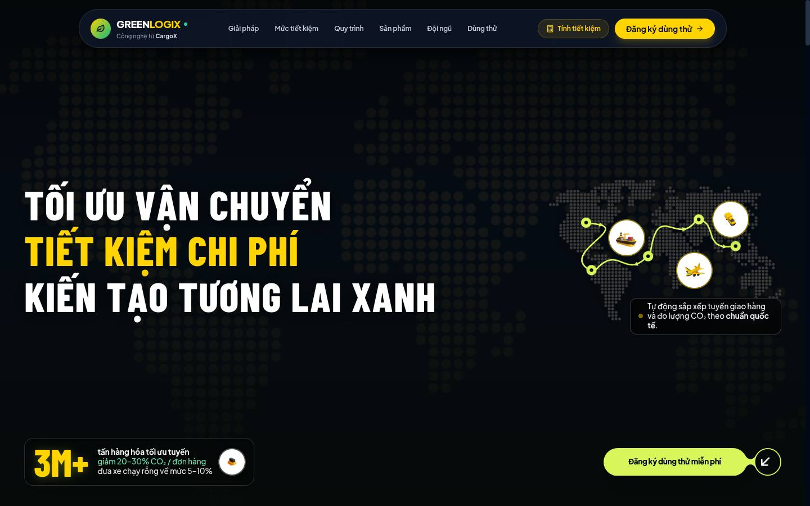
Solutions · Calculator · Workflow · Team · Pricing
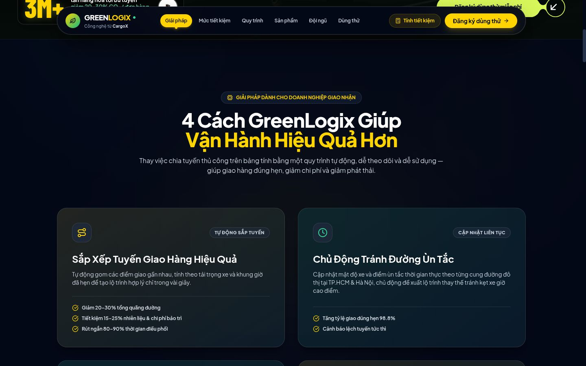
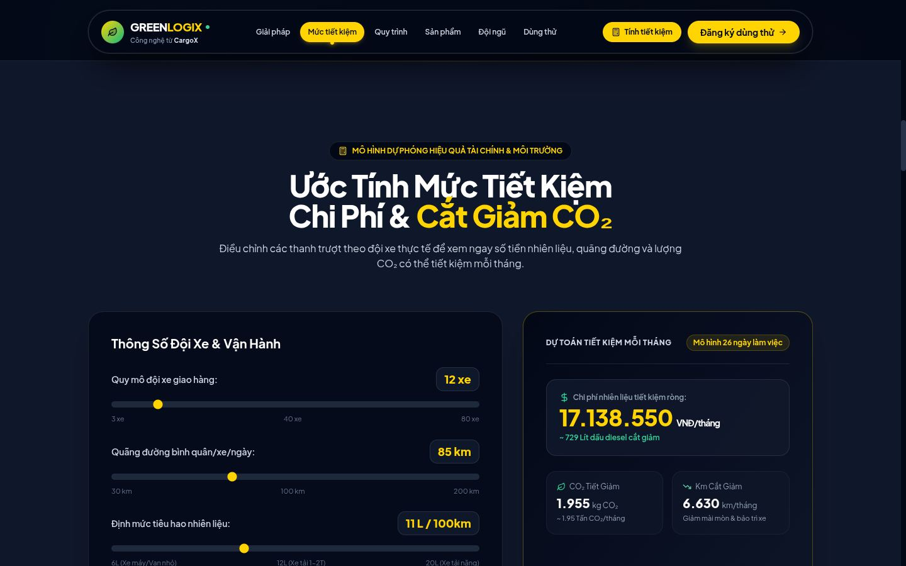
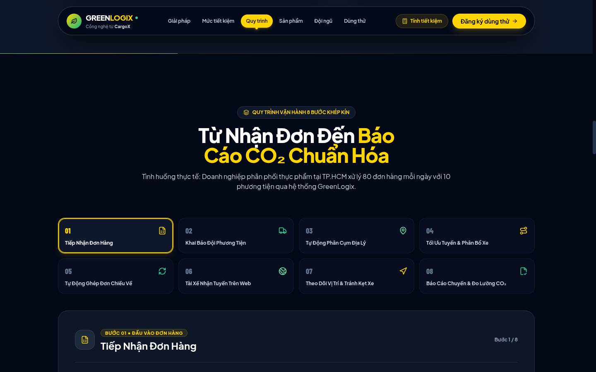
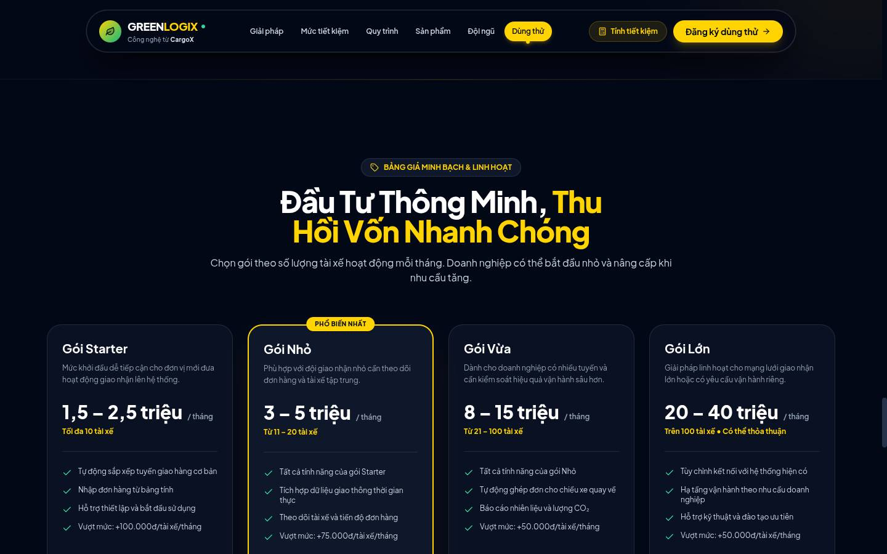
Mobile 390×844 — CTA in first screen · modal · success
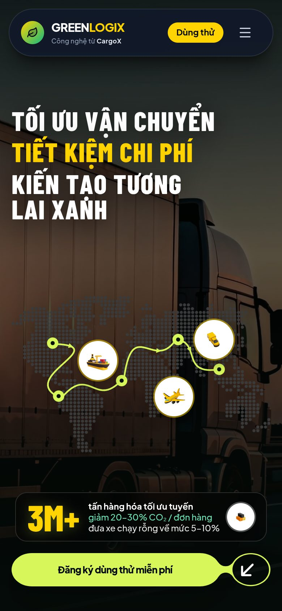
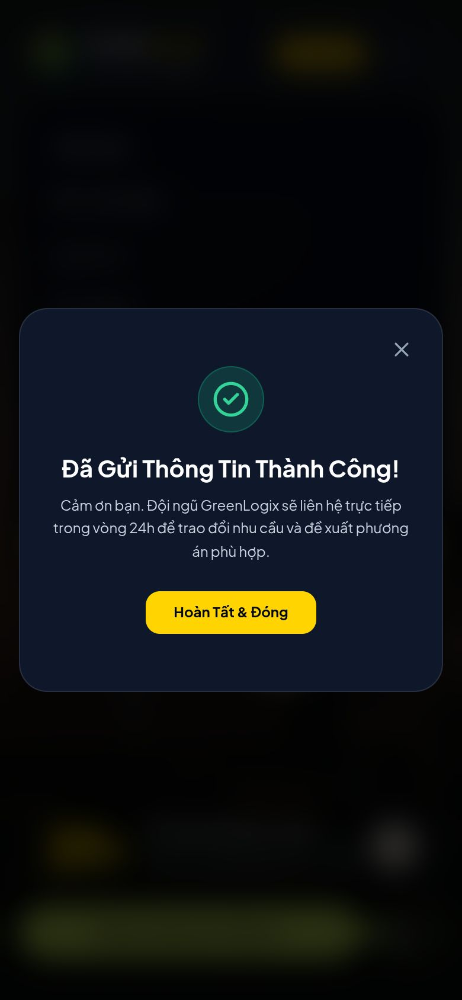
2. Tracer — actually running on :8000
GREENLOGIX_DEMO=1. Auth Bearer DEMO / pin 0000. Zero map API keys.
After Optimize: 94.74 km · 9.85 L · 24.53 kg CO₂ · 5 routes
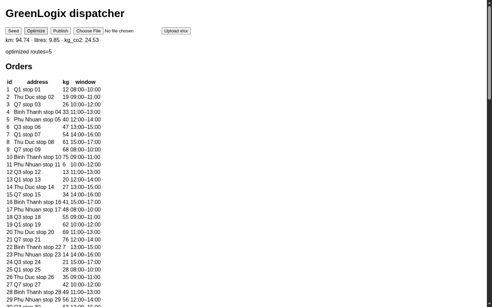
OSM Leaflet over HCMC (one truck marked maintenance)
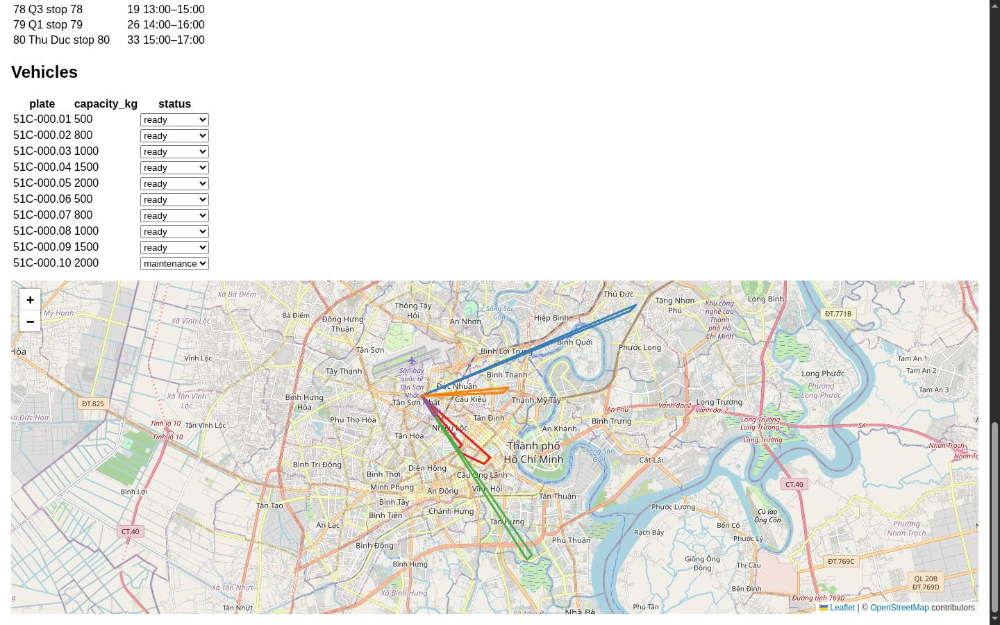
Before/after strip from GET /report (computed, not BRAINSTORM constants). Baseline is the plan’s zig-zag D-17, so −88% is real vs that baseline, not vs a human dispatcher.
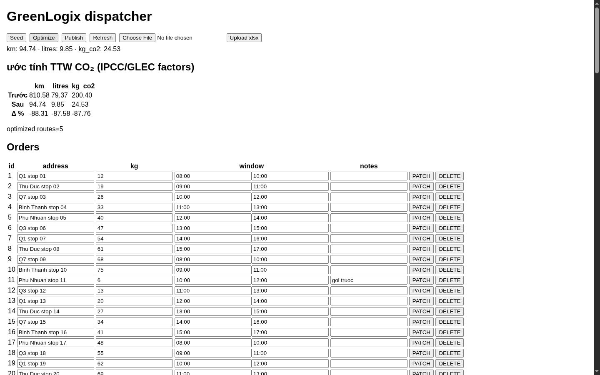
QA pass: map + KPI above the fold (contest layout)
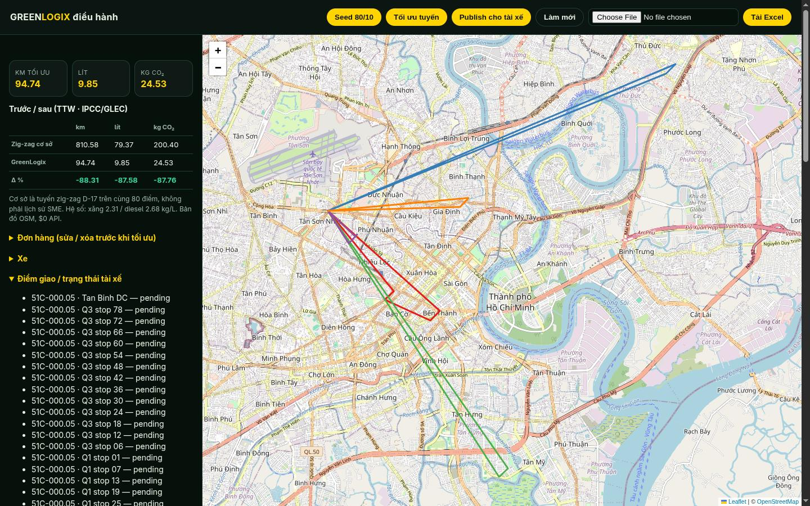
GET /report (live curl 18:08)
baseline 810.58 km / 79.37 L / 200.40 kg CO₂
optimized 94.74 km / 9.85 L / 24.53 kg CO₂
delta −715.84 km / −69.51 L / −175.87 kg · −88.31% km
3. Git
- Landing PR: feature/landing-qa-72h → dev
- API+Flutter backup: gsd/01-mvp-walking-skeleton (tip
2640ad7) - Do not fast-forward
stabletonight.
4. When you sit down
- Open this HTML locally:
docs/reports/2026-09-02-1900.html - PR landing into
dev. After QA, promotedev→stableso Pages gets the new hero assets. - PR or merge
gsd/01-mvp-walking-skeletonas the walking-skeleton (or split back ontocr/001-api/cr/001-flutter). - If you want a real lead inbox, say which: mailto, Formspree, or FastAPI POST. I did not invent one.
- AVD or phone for the Maps intent. Unit tests already prove the URL.